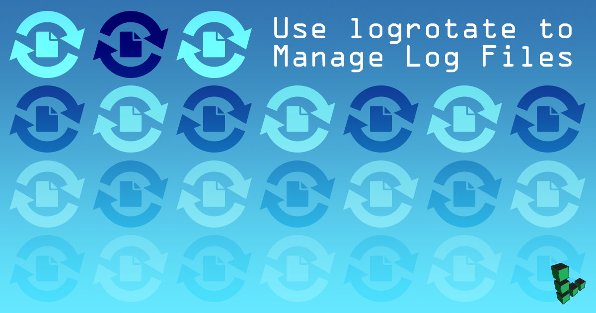

How to Use logrotate to Manage Log Files
Updated by Linode Written by Linode
What is logrotate?
Logrotate is a tool for managing log files created by system processes. This tool automatically compresses and removes logs to maximize the convenience of logs and conserve system resources. Users have extensive control over how and when log rotation is processed.

Use Logrotate
logrotate’s behavior is determined by options set in a configuration file, typically located at /etc/logrotate.conf:
logrotate /etc/logrotate.conf
Beyond the system-wide log rotation configuration, you can also configure logrotate on a per-user basis. If your deployment requires that non-privileged users rotate their own logs, each can create distinct configuration files.
Run logrotate as a cronjob
Run logrotate as a cronjob to ensures that logs will be rotated as regularly as configured. Logs will only be rotated when logrotate runs, regardless of configuration. For example, if you configure logrotate to rotate logs every day, but logrotate only runs every week, the logs will only be rotated every week.
For most daemon processes, logs should be rotated by the root user. In most cases, logrotate is invoked from a script in the /etc/cron.daily/ directory. If one does not exist, create a script that resembles the following in the /etc/cron.daily/ folder:
- /etc/cron.daily/logrotate
-
1 2#!/bin/sh logrotate /etc/logrotate.conf
You may also use an entry in the root user’s crontab.
Understand logrotate.conf
The configuration file for log rotation begins with a number of global directives that control how log rotation is applied globally. Most configuration of log rotation does not occur in the /etc/logrotate.conf file, but rather in files located in the /etc/logrotate.d/ directory. Every daemon process or log file will have its own file for configuration in this directory. The /etc/logrotate.d/ configurations are loaded with the following directive in logrotate.conf:
- logrotate.conf
-
1include /etc/logrotate.d
Configuration settings for rotation of specific logs is instantiated in a block structure:
- logrotate.conf
-
1 2 3 4 5 6 7/var/log/mail.log { weekly rotate 5 compress compresscmd xz create 0644 postfix postfix }
The size and rotation of /var/log/mail.log is managed according to the directives instantiated between the braces. The above configuration rotates logs every week, saves the last five rotated logs, compresses all of the old log files with the xz compression tool, and recreates the log files with permissions of 0644 and postfix as the user and group owner. These specific configuration options override global configuration options which are described below.
Remove or Email Old Logs with Rotate Count
- logrotate.conf
-
1rotate 4
The rotate directive controls how many times a log is rotated before old logs are removed. If you specify a rotation number of 0, logs will be removed immediately after they are rotated. If you specify an email address using the mail directive as file, logs are emailed and removed.
- logrotate.conf
-
1mail <username@example.com>
Your system will need a functioning Mail Transfer Agent to be able to send email.
Configure Log Rotation Intervals
To rotate logs every week, set the following configuration directive:
- logrotate.conf
-
1weekly
When weekly is set, logs are rotated if the current week day is lower than the week day of the last rotation (i.e., Monday is less than Friday) or if the last rotation occurred more than a week before the present.
To configure monthly log rotation, use the following directive:
- logrotate.conf
-
1monthly
Logs with this value will rotate every month that logrotate runs.
For annual rotation:
- logrotate.conf
-
1yearly
Logs are rotated when the current year differs from the date of the last rotation.
To rotate based on size, use the following directive:
- logrotate.conf
-
1size [value]
The size directive forces log rotation when a log file grows bigger than the specified [value]. By default, [value] is assumed to be in bytes. Append a k to [value] to specify a size in kilobytes, M for megabytes, or G for gigabytes. For example, size 100k or size 100M are valid directives.
Compress Rotated (Old) Logs
- logrotate.conf
-
1compress
The compress directive compresses all logs after they have been rotated. If this directive is placed in the global configuration, all logs will be compressed. If you want to disable a globally enabled compression directive for a specific log, use the nocompress directive.
- logrotate.conf
-
1compresscmd xz
By default, logrotate compresses files using the gzip command. You can replace this with another compression tool such as bzip2 or xz as an argument to the compresscmd directive.
Delay Log File Compression
- logrotate.conf
-
1delaycompress
In some situations it is not ideal to compress a log file immediately after rotation when the log file needs additional processing. The delaycompress directive above postpones the compression one rotation cycle.
Maintain Log File Extension
Logrotate will append a number to a file name so the access.log file will be rotated to access.log.1. To ensure that an extension is maintained, use the following directive:
- logrotate.conf
-
1extension log
If you enable compression, the compressed log will be named access.1.log.gz.
Control Log File Permissions
If your daemon process requires that a log file exist to function properly, logrotate may interfere when it rotates logs. As a result, it is possible to have logrotate create new, empty log files after rotation. Consider the following example:
- logrotate.conf
-
1create 640 www-data users
In this example, a blank file is created with the permissions 640 (owner read/write, group read, other none) owned by the user www-data and in the users group. This directive specifies options in the form: create [mode(octal)] [owner] [group].
Run Commands Before or After Rotation
logrotate can run commands before and after rotation to ensure that routine tasks associated with log ration, such as restarting or reloading daemons and passing other kinds of signals, are run.
Prerotate - Run commands before logrotate
To run a command before rotation begins, use a directive similar to the following:
- logrotate.conf
-
1 2 3prerotate touch /srv/www/example.com/application/tmp/stop endscript
The command touch /srv/www/example.com/application/tmp/stop runs before rotating the logs. Ensure that there are no errant directives or commands on the lines that contain prerotate and endscript. Remember that all lines between these directives will be executed.
Postrotate - Run commands after logrotate
To run a command or set of commands after log rotation, consider the following example:
- logrotate.conf
-
1 2 3postrotate touch /srv/www/example.com/application/tmp/start endscript
postrotate is identical to prerotate except that the commands are run after log rotation.
For a more comprehensive listing of possible directives, run man logrotate.
Join our Community
Find answers, ask questions, and help others.
This guide is published under a CC BY-ND 4.0 license.